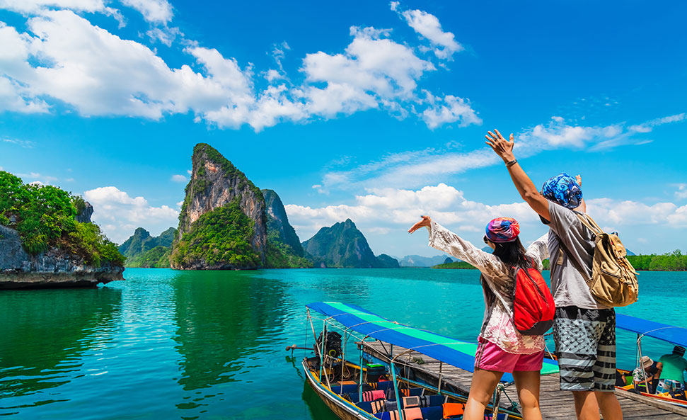
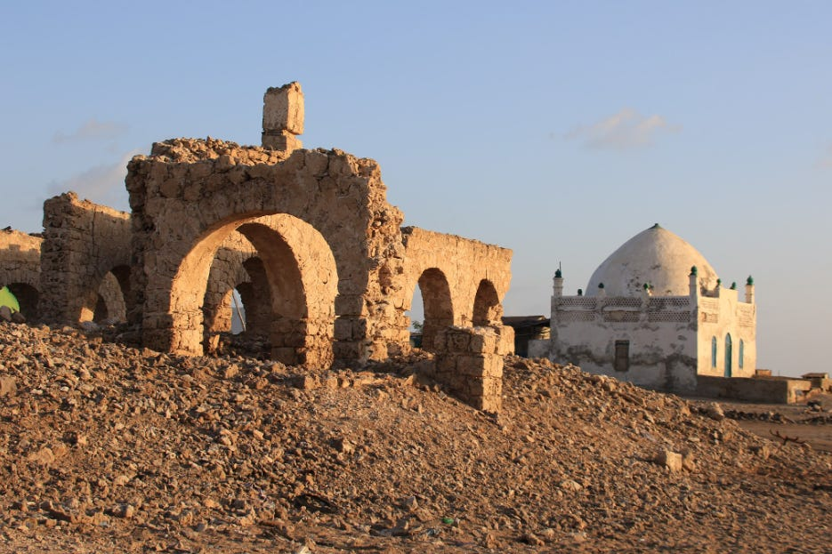

Local Travel The best service travel

Local Travel is a travel guide project designed to help people
discover beautiful destinations across Somalia and beyond.
It offers information about top tourist spots, cultural
landmarks, and hidden gems — all in one place.
The goal
of TravelBuddy is to make exploring easier,
safer, and more
enjoyable by providing trusted details about
locations, costs,
history, and travel tips. Whether you want
to relax on
Jazeera Beach, explore ancient caves at Laas Geel,
or walk
through Mogadishu’s National Museum, TravelBuddy is
your
friendly companion for every journey. To inspire travel
and connect
people with the beauty, culture, and history of
Somalia and the world.
To become the go-to digital guide
for travelers seeking authentic
experiences.

Elite Hotel is a privately-owned hotel, apparently one of the more conspicuous investments along Liido Beach. It has been frequented by Somali officials, members of the diaspora, and visitors.

If you’re looking for a green open space in Mogadishu for relaxing, walking or socializing, Beerta Xayaat is a possible option. Parks like this provide a local-community vibe: children playing, families gathering, local atmosphere.

Good option for families and kids: rides, animals, swimming pool, etc make it more than a simple green park. Located in a somewhat newer or planned-estate type area (Daaru Salaam City) which many diaspora and families mention as “cleaner, more residential” compared with central Mogadishu.

Reviewers highlight good ambience and a rooftop view, making it a notable location for meals with a view. T he menu is varied, which is positive if you want options beyond typical Somali dishes.

Spectacular waterfalls located on high cliffs in the Cal Madow mountains. The Lamadaya Waterfalls are among the tallest in Somalia and offer breathtaking views, making them perfect for adventure and photography

Zeila is an ancient port town in the north-west of Somalia (in the Somaliland region) with rich heritage — the ruins of the Adal Sultanate, old mosques, and the meeting of land and sea.


©Copyright 2025 Local Travel